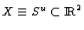
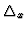
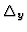
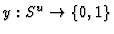
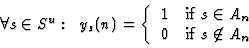
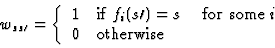
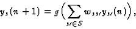
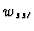

Stark's algorithm [3,4] implies the transition from a given IFS F to the corresponding neural network W. To do such a passage, it is enough to consider any one iteration of F.
Let

, Su - a unit square digitized with respect to fixed resolutions
and
. Every An has its indicator function,
, such that:
 |
(8) |
If we define
 |
(9) |
then the dynamics of ys(n) is given by
 |
(10) |
where g is a step function.
Thus, we have the binary neural network with |Su| neurons ys and synaptic weights

that realizes the IFS F.